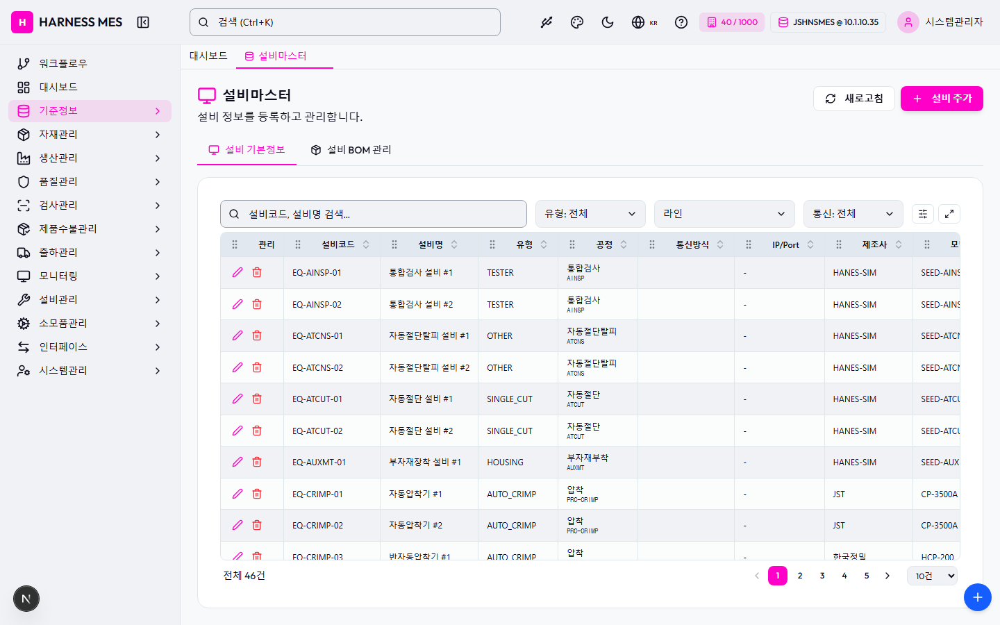

Route: /master/equip
Status: FAIL / HTTP 200
| 기능/버튼 | 처리 방식 | 상태 | 비고 |
|---|---|---|---|
| 화면 로드 | GET /master/equip | 실행 | HTTP 200 |
| 초기 API 호출 | 브라우저 네트워크 수집 | 실행 | 12건 |
| 🇰🇷 | 화면 버튼 목록화 | 목록화 | 후속 메뉴별 세부 시나리오 실행 대상 |
| 시스템관리자 | 화면 버튼 목록화 | 목록화 | 후속 메뉴별 세부 시나리오 실행 대상 |
| 워크플로우 | 화면 버튼 목록화 | 목록화 | 후속 메뉴별 세부 시나리오 실행 대상 |
| 대시보드 | 화면 버튼 목록화 | 목록화 | 후속 메뉴별 세부 시나리오 실행 대상 |
| 기준정보 | 화면 버튼 목록화 | 목록화 | 후속 메뉴별 세부 시나리오 실행 대상 |
| 자재관리 | 화면 버튼 목록화 | 목록화 | 후속 메뉴별 세부 시나리오 실행 대상 |
| 생산관리 | 화면 버튼 목록화 | 목록화 | 후속 메뉴별 세부 시나리오 실행 대상 |
| 품질관리 | 화면 버튼 목록화 | 목록화 | 후속 메뉴별 세부 시나리오 실행 대상 |
| 검사관리 | 화면 버튼 목록화 | 목록화 | 후속 메뉴별 세부 시나리오 실행 대상 |
| 제품수불관리 | 화면 버튼 목록화 | 목록화 | 후속 메뉴별 세부 시나리오 실행 대상 |
| 출하관리 | 화면 버튼 목록화 | 목록화 | 후속 메뉴별 세부 시나리오 실행 대상 |
| 모니터링 | 화면 버튼 목록화 | 목록화 | 후속 메뉴별 세부 시나리오 실행 대상 |
| 설비관리 | 화면 버튼 목록화 | 목록화 | 후속 메뉴별 세부 시나리오 실행 대상 |
| 소모품관리 | 화면 버튼 목록화 | 목록화 | 후속 메뉴별 세부 시나리오 실행 대상 |
| 인터페이스 | 화면 버튼 목록화 | 목록화 | 후속 메뉴별 세부 시나리오 실행 대상 |
| 시스템관리 | 화면 버튼 목록화 | 목록화 | 후속 메뉴별 세부 시나리오 실행 대상 |
| 설비마스터 | 화면 버튼 목록화 | 목록화 | 후속 메뉴별 세부 시나리오 실행 대상 |
| 새로고침 | 화면 버튼 목록화 | 목록화 | 후속 메뉴별 세부 시나리오 실행 대상 |
| 설비 추가 | 화면 버튼 목록화 | 목록화 | 후속 메뉴별 세부 시나리오 실행 대상 |
| 설비 기본정보 | 화면 버튼 목록화 | 목록화 | 후속 메뉴별 세부 시나리오 실행 대상 |
| 설비 BOM 관리 | 화면 버튼 목록화 | 목록화 | 후속 메뉴별 세부 시나리오 실행 대상 |
| 1 | 화면 버튼 목록화 | 목록화 | 후속 메뉴별 세부 시나리오 실행 대상 |
| 2 | 화면 버튼 목록화 | 목록화 | 후속 메뉴별 세부 시나리오 실행 대상 |
| 3 | 화면 버튼 목록화 | 목록화 | 후속 메뉴별 세부 시나리오 실행 대상 |
| 4 | 화면 버튼 목록화 | 목록화 | 후속 메뉴별 세부 시나리오 실행 대상 |
| 5 | 화면 버튼 목록화 | 목록화 | 후속 메뉴별 세부 시나리오 실행 대상 |
| 전체화면 보기 | 화면 버튼 목록화 | 목록화 | 후속 메뉴별 세부 시나리오 실행 대상 |
| AI 채팅 | 화면 버튼 목록화 | 목록화 | 후속 메뉴별 세부 시나리오 실행 대상 |
| 개선요청 등록 | 화면 버튼 목록화 | 목록화 | 후속 메뉴별 세부 시나리오 실행 대상 |
| 입력 필드 | DOM 수집 | 목록화 | 2개 |
| 선택 필드 | DOM 수집 | 목록화 | 4개 |
| 목록/그리드 | DOM 수집 | 목록화 | table 1, grid 0 |
| Method | URL | Status | OK |
|---|---|---|---|
| GET | /api/health | 200 | OK |
| GET | /api/db-info | 200 | OK |
| GET | /api/health | 200 | OK |
| GET | /api/db-info | 200 | OK |
| GET | /api/auth/me | 200 | OK |
| GET | /api/system/configs/active | 200 | OK |
| GET | /api/system/comm-configs?commType=SERIAL&useYn=Y | 200 | OK |
| GET | /api/ai/page-tools/master.equip | 200 | OK |
| GET | /api/menu-categories/tree | 200 | OK |
| GET | /api/equipment/equips/metadata/lines | 200 | OK |
| GET | /api/equipment/equips?limit=100 | 200 | OK |
| GET | /api/master/com-codes/all-active | 200 | OK |
requestfailed: GET /api/db-info net::ERR_ABORTED requestfailed: GET https://fonts.gstatic.com/s/outfit/v15/QGYvz_MVcBeNP4NJtEtq.woff2 net::ERR_ABORTED

H HARNESS MES 🇰🇷 40 / 1000 JSHNSMES @ 10.1.10.35 시스템관리자 워크플로우 대시보드 기준정보 자재관리 생산관리 품질관리 검사관리 제품수불관리 출하관리 모니터링 설비관리 소모품관리 인터페이스 시스템관리 대시보드 설비마스터 설비마스터 설비 정보를 등록하고 관리합니다. 새로고침 설비 추가 설비 기본정보 설비 BOM 관리 유형: 전체 유형: 공통 유형: 자동압착기 유형: 단선절단기 유형: 다선절단기 유형: 트위스트기 유형: 솔더링기 유형: 하우징기 유형: 검사기 유형: 라벨프린터 유형: 검사설비 유형: 포장기 유형: 기타 라인 LINE-01 - 절단라인 LINE-02 - 압착라인 LINE-03 - 선조립라인A LINE-04 - 조립라인A LINE-05 - 검사포장라인 P2001 - 자동압착1 통신: 전체 통신: MQTT 통신: 시리얼 통신: TCP/IP 통신: OPC-UA 통신: Modbus 관리 설비코드 설비명 유형 공정 통신방식 IP/Port 제조사 모델 사용 EQ-AINSP-01 통합검사 설비 #1 TESTER 통합검사 AINSP - HANES-SIM SEED-AINSP-01 EQ-AINSP-02 통합검사 설비 #2 TESTER 통합검사 AINSP - HANES-SIM SEED-AINSP-02 EQ-ATCNS-01 자동절단탈피 설비 #1 OTHER 자동절단탈피 ATCNS - HANES-SIM SEED-ATCNS-01 EQ-ATCNS-02 자동절단탈피 설비 #2 OTHER 자동절단탈피 ATCNS - HANES-SIM SEED-ATCNS-02 EQ-ATCUT-01 자동절단 설비 #1 SINGLE_CUT 자동절단 ATCUT - HANES-SIM SEED-ATCUT-01 EQ-ATCUT-02 자동절단 설비 #2 SINGLE_CUT 자동절단 ATCUT - HANES-SIM SEED-ATCUT-02 EQ-AUXMT-01 부자재장착 설비 #1 HOUSING 부자재부착 AUXMT - HANES-SIM SEED-AUXMT-01 EQ-CRIMP-01 자동압착기 #1 AUTO_CRIMP 압착 PRC-CRIMP - JST CP-3500A EQ-CRIMP-02 자동압착기 #2 AUTO_CRIMP 압착 PRC-CRIMP - JST CP-3500A EQ-CRIMP-03 반자동압착기 #1 AUTO_CRIMP 압착 PRC-CRIMP - 한국정밀 HCP-200 전체 46건 1 2 3 4 5 10건 20건